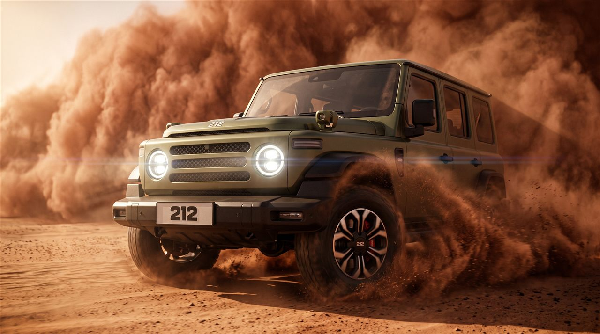
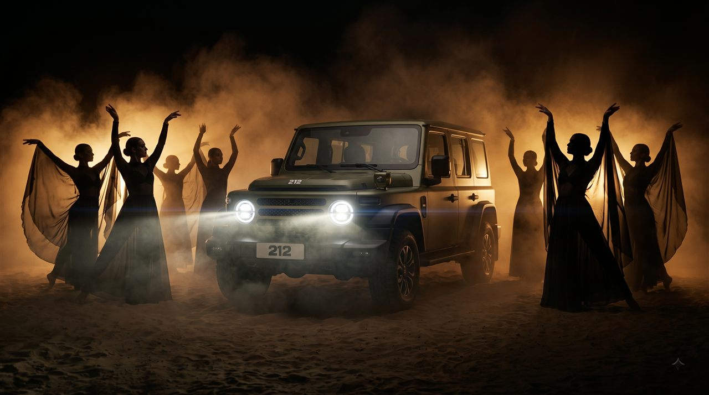
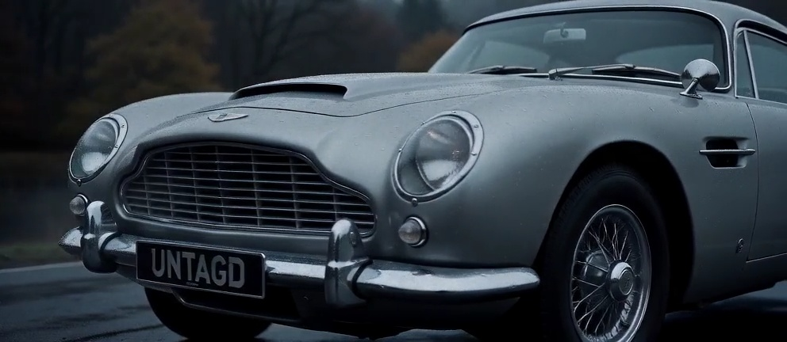

An AI-directed ad film crafted for the 212 Kuwait brand — pushing the vehicle through every environment it was built to conquer. Raw terrain, cinematic momentum, and a frame-by-frame intent that makes it feel shot, not generated.

People, places, animals, art — the Kutch region explored through AI that doesn't look like AI. Every frame directed with intent. Beat-synced to Sumedh K's Tulasi.

The cinematic companion to the 212 Kuwait campaign — slower, more deliberate, built for feeling. Where All Terrains shows capability, this one shows character. Every shot composed to make you feel the weight of the machine.

A 16-shot AI cinematic sequence with full process documentation — from prompt formula to mid-workflow adaptation. Built in 12 hours.

High-speed curve dynamics, carbon fiber texture fidelity, and precision motion blur simulation captured in panoramic cinematic widescreen for UNTAGD creative studio.
A Concept Collaboration Showreel
An AI-directed concept showreel imagining a BMW x KITH collaboration — luxury automotive meets high-fashion streetwear in a visual language built entirely from intent.
The Valor of Queen Nayika Devi
AI micro-drama recreating the historical battle where Queen Nayika Devi defended Gujarat.
Luxury Automotive Showcase
AI-driven cinematic showcase built around the iconic white Porsche 911 Turbo S.
Why Founders Choose Credes
Fast-paced Meta ad brand film showing why founders and entrepreneurs choose Credes.
Your Only Opponent is Yourself
Trending audio meets cinematic direction. A figure walks forward in slow motion — and meets their own silhouette standing still in the distance.
India AI Impact Summit
AI documentary on India's technological trajectory. Top 15 entry at the India AI Impact Summit opening ceremony competition.
Man & Dog — Diabolical Reel
A short, diabolical reel — man and dog, a pole, and wind. Absurd in concept, deliberate in execution. Proof that AI direction works at any scale, including the ridiculous.
Desert Extraction Scene Synthesis
Gritty desert narrative exploring harsh sun exposure, desolate isolation, character tension, and dust haze environmental synthesis directed for UNTAGD.
Random Multiverse Action Clips
High-velocity action clips and kinetic framing exploring superhero flight cadence, comic dynamism, and surreal physics across alternate multiverse realities.
Cinematic brand stories tailored for key launches, rebrands, corporate announcements, and high-impact social campaigns.
Premium product reveals and closeups featuring beat-synchronized editorial cuts and detailed macro camera cinematography.
AI-driven dramatic retelling of epic historical moments, built with academic research-backed realism and authentic voices.
5 to 10 tailored AI vertical video assets per month, aligned with custom brand models and a unified visual tone.